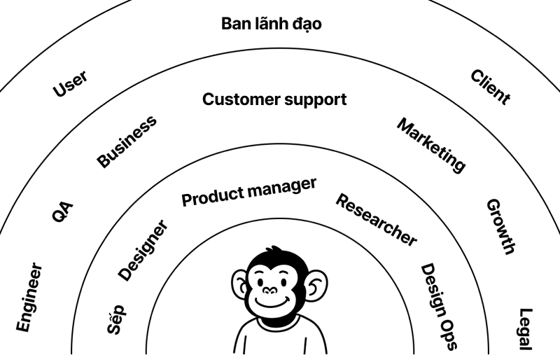
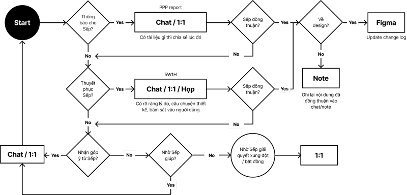

Bài viết dành cho những bạn designer đang cảm thấy làm việc cứ hay bị trục trặc trong việc nói chuyện với mọi người...và dành cho những ai đang làm sếp.
giao tiếp với ai? và như thế nào?

Trong một tổ chức thường có, product designer sẽ cần giao tiếp với những vị trí như sau:
Vòng tròn 1: Hiểu rõ vai trò và các công việc đang diễn ra của bạn, có kiến thức ngành tương đối giống bạn.
- Sếp
- Designer khác
- Researcher
- Design operator
- Product manager
Vòng tròn 2: Có nhận thức về vai trò của bạn, hợp tác làm việc chung.
- Engineer
- QA
- Business
- Customer support
- Marketing
- Growth
- Legal
Vòng tròn 3: Có nhận thức về vai trò của bạn, nhưng không biết công việc đang diễn ra của bạn.
- Ban lãnh đạo
- Người dùng
- Khách hàng
Vòng tròn càng xa bạn thì tương đương độ hiểu cũng càng ít dần. Vậy để họ hiểu mình, thì trước hết mình cũng nên hiểu họ.
Sếp (Design lead / director)
Cao
- Hiệu suất của nhóm
- Sự phát triển của các thành viên
- Đồng nhất mục tiêu chung của nhóm
- Tiến độ công việc
- Drama trong nhóm
- Không biết các rào cản của bạn
- Không nắm được tiến độ của bạn
- Tìm kiếm phản hồi
- Báo...cáo, giải quyết trở ngại
- Thuyết phục
- Ra quyết định
- Đảm bảo sự đồng thuận
- Tìm kiếm sự định hướng
- Chat / Nói chuyện
- Họp 1:1
Sếp là một người đóng vai trò quản lý, dẫn đường và bảo vệ bạn trước những sự căng thẳng không cần thiết của bên ngoài và bên trên. Để một người sếp có thể làm 3 việc đó cho bạn, thì bạn phải giúp họ hiểu được tình hình của bạn như thế nào một cách rõ ràng nhất.
Là một người sếp tốt, họ sẽ quan tâm vào sự phát triển của bạn. Nhưng điểm đau cũng như là điểm mù của họ là không thấy những rào cản, những khó khăn của bạn, nếu như bạn không chủ động nói. Bởi lẽ đơn giản là vì họ đã từng trải qua những việc đó và giờ với họ đó là một chuyện bình thường, họ quên mất đó là những khó khăn rào cản lúc còn là junior...hoặc họ đang tập trung vào những vấn đề to hơn để đối mặt và không để ý đến những vấn đề nhỏ hơn, bạn phải nhắc để họ nhận ra vấn đề dù nhỏ hay lớn vẫn là vấn đề cần họ giúp.
Là một người sếp giỏi, họ sẽ phải là người đi giải quyết vấn đề của bạn, để bạn chỉ tập trung vào đúng một việc...đó là làm design, họ sẽ chủ động tổ chức các buổi 1:1 hằng tháng để tâm sự nhỏ to với bạn, để hiểu bạn hơn. Chứ không phải bảo bạn lo làm giấy tờ xin budget với kế toán, hay bảo bạn bị overload thì tự đi bàn luận về workload với team Product cho việc planning làm việc, hay kêu bạn viết JD và kế hoạch tuyển dụng nhân sự, hay để bạn nắm hết mọi context của sản phẩm và họ thì không nắm rõ gì hết...những việc đó là việc của một người sếp không biết cách làm leader mà chỉ biết làm boss.
Nếu sếp bạn chưa phải là một người như mình liệt kê trên, thì ngoài việc tập trung làm design ra, bạn còn hai việc nữa là làm cách nào đó để sếp bạn đọc được bài viết này, hai là bắt đầu khóa training cho sếp bằng cách tập đưa vấn đề mình gặp phải cho sếp biết nhé.
Cách giao tiếp với Sếp
Nếu sếp bạn là một người giúp bạn cảm thấy thoải mái khi giao tiếp, thì chúc mừng bạn vì bạn không cần phải suy nghĩ cách để tiếp cận sếp mình, cứ trao đổi trực tiếp là hiệu quả nhất. Còn nếu bạn thấy đang khó giao tiếp với sếp thì mình sẽ trình bày cách giao tiếp thông qua workflow như sau nhé:

Mình có note ghi chú trong workflow, trên những ô hành động ví dụ như PPP report và 5W1H, đó là những phương pháp để truyền tải thông tin một cách hệ thống và rõ ràng nhất. Mình sẽ viết sơ bộ về 2 framework này ở phía dưới, nếu bạn có hứng thú thì có thể tự tìm hiểu sâu hơn.
PPP report là một phương pháp để viết báo cáo về tiến độ công việc, bao gồm 3 nội dung chính là:
- Progress: Tiến độ hiện tại đang làm và đã xong những gì.
- Plan: Kế hoạch tiếp theo sẽ làm những gì.
- Problem: Đang có những vấn đề gì cản trở công việc, hoặc cần sếp hỗ trợ giải quyết.
5W1H là phương pháp có thể dùng để mô tả một sự việc/vấn đề một cách rõ ràng nhất, giúp cho người nhận thông tin có thể nắm rõ được ngữ cảnh của vấn đề đó. 5W1H vận hành dựa trên sáu câu hỏi:
- What - Cái gì
- When - Khi nào
- Who - Ai
- Where - Ở đâu
- Why - Tại sao
- How - Làm thế nào
Nếu bạn có để ý thì chuỗi bài viết về Giao tiếp này mình cũng áp dụng phương pháp này để truyền tải thông tin đến cho bạn đọc. Ngoài ra còn có thể sử dụng 5W1H vào việc thu thập thông tin, lập kế hoạch bằng cách đặt ra sáu câu hỏi đó.
Về cơ bản Sếp bạn là người mà bạn cần giao tiếp nhiều nhất, để nắm được thông tin nhanh nhất có thể về mọi thứ liên quan đến công việc. Vì vậy trong workflow phía trên, phương pháp giao tiếp gần như luôn là chat và 1:1 (mặt đối mặt). Ngoài ra để kết thúc hồi 3 về Sếp này, mình có những tips sau để giao tiếp với Sếp nhé:
- Có bàn bạc gì với Sếp thì nên nhớ note lại hết (note trên Figma hoặc trên Sheets hay Notion gì cũng được), vì Sếp dễ mất trí nhớ lắm. Note lại phòng hờ rủi ro Sếp lần sau feedback ngược lại với cái đã từng feedback. Và nhớ ghi theo framework 5W1H.
- Nên 1:1 với Sếp hằng tháng, nếu Sếp không chủ động thì bạn có thể nhờ Sếp đặt lịch hằng tháng. Nếu Sếp bạn có tín hiệu bị động trong buổi đó như kiểu “Ủa anh/chị không biết cần buổi này làm gì?” thì nội dung buổi đó bạn có thể chủ động hỏi những thứ sau: Những việc trong tháng/quý tiếp theo cần làm là gì? Có gì cần em phát triển/cải thiện hơn không? Sếp nghĩ em cần học thêm cái gì? Định hướng sản phẩm đang như thế nào rồi Sếp? Hoặc xin nghỉ việc, vì một người sếp không 1:1 với nhân viên là một người sếp không đủ quan tâm đến nhân viên.
- Nếu sếp hỏi mà bạn không biết câu trả lời, lúc đó Sếp chỉ cần nhất ở bạn là một nụ cười tự tin và nói “Em chưa biết, để em kiểm tra / tìm hiểu thêm”. Đừng bao giờ tự chém gió lúc đó để lãnh hậu quả bằng câu “Ủa em tưởng...”
- Thay vì than thở mình đang nhiều việc với giọng điệu mệt mỏi một cách tiêu cực và chỉ nói chung chung là nhiều việc, hãy khoe thành tích danh sách những công việc mình đã hoàn thành thay vì than thở. Khoe và than nó đều chung một mục đích nhưng cách tiếp cận và kết quả hoàn toàn khác nhau. Cũng như tốt nhất là lưu lại hết để lúc làm performance review, mình chỉ cần paste danh sách đó cho AI để nó viết thành cái report cho mình. Đỡ mắc công tới lúc đó lại phải lục lọi trong ký ức 5 - 11 tháng trước mình đã làm những gì, mình than dữ quá mà không nhớ mình làm gì hết.
- Có vấn đề không giải quyết được với bên ngoài thì cứ luôn niệm thần chú “Dạ! Để em đi hỏi sếp em!”. Bạn không cần đưa ra bất kỳ quyết định gì nếu không bắt buộc, vì đơn giản bạn không nắm được đủ thông tin nhiều như Sếp để có thể đưa ra quyết định.
- Có vấn đề cá nhân dẫn đến ảnh hưởng tiến độ công việc thì luôn phải báo cho Sếp liền ngay lập tức, không thể im im ráng vừa giải quyết vấn đề và vừa làm việc. Điển hình là việc chắc chắn không kịp deadline nhưng bằng một niềm tin không lung lay, thức trắng đêm làm và kết quả vẫn không kịp cộng với chất lượng tệ là một thảm họa. Thay vì đó cứ chấp nhận việc mình không làm kịp, Sếp có thể deal lại deadline với bên stakeholder, hoặc có thể kiếm bạn khác phụ mình làm. Tốc độ của cả team là tốc độ của người chậm nhất, khi Sếp đã nắm tình hình bạn đang chậm thì Sếp muốn nhanh thì Sếp phải vận động cả team giúp bạn nhanh hơn, đó là điều tất yếu của một người leader.
- Với việc thiết kế, luôn phải tự đặt ra câu hỏi Tại sao mình làm vậy. Và câu trả lời không bao giờ là vì nó “Đẹp”. Bạn phải dựa trên vấn đề cần giải quyết, câu chuyện thiết kế, mới có thể bán ý tưởng/layout thiết kế đó cho Sếp bạn. Bởi vì Sếp bạn cũng sẽ phải trả lời cho Sếp của Sếp bạn hoặc các phòng ban bên ngoài nếu như họ có thắc mắc câu hỏi Tại sao đó.
- Nếu Sếp đang ghost bạn trên Chat hoặc Figma, hãy nhẹ nhàng viết mail recap, ghost tiếp thì mình tiếp cận các kênh không chính thức như Zalo, Telegram nếu có để nhắc Sếp việc phản hồi. Vẫn ghost thì mình chuyển qua tiếp cận gián tiếp bằng cách hỏi những người xung quanh dạo này có giao tiếp được với Sếp không để có thể đánh giá được tình hình, cũng như nhờ các bên liên quan dí Sếp giúp mình. Nếu tình huống căng thẳng xảy ra, bạn nên lưu lại hình ảnh về thời gian giao tiếp, nội dung giao tiếp rồi đi tâm sự mỏng với HR về tình huống này, cũng như thông báo tình trạng “Đang chờ Sếp phản hồi” của những gì bạn đang bị thắt nút cổ chai bởi Sếp mình cho các phòng ban liên quan đến việc đó. Và cuối cùng là chuẩn bị cập nhật lại CV cho tình huống xấu nhất có thể xảy ra.